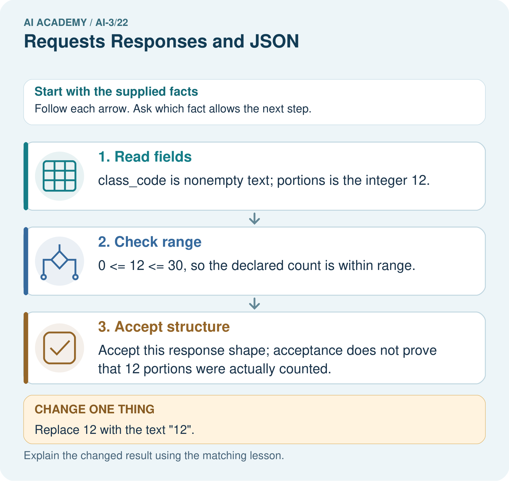
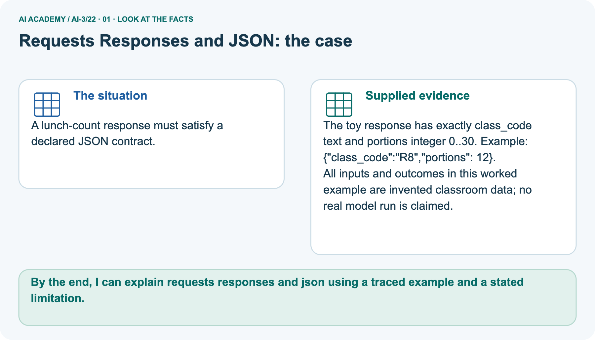
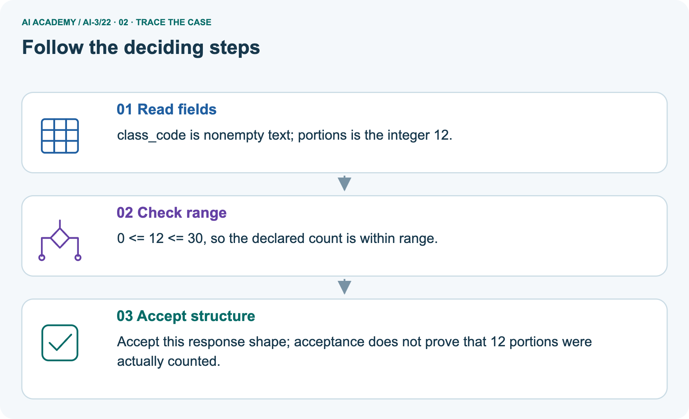
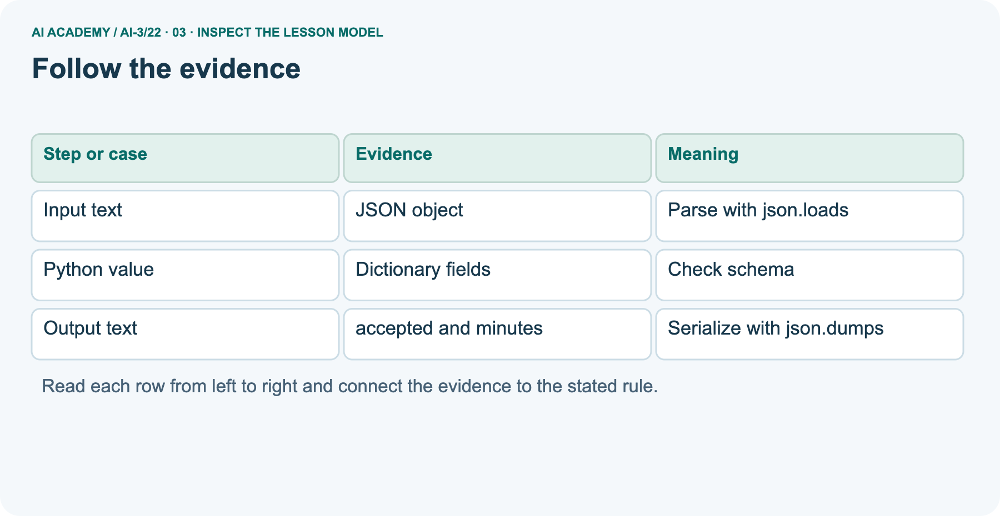
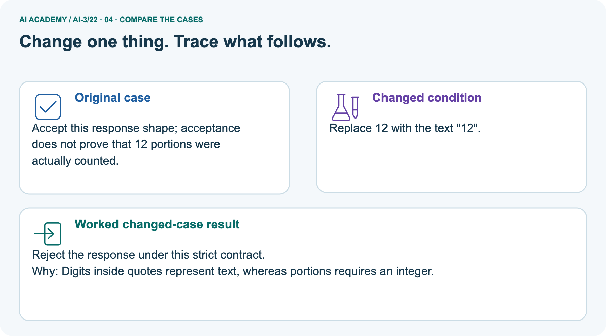
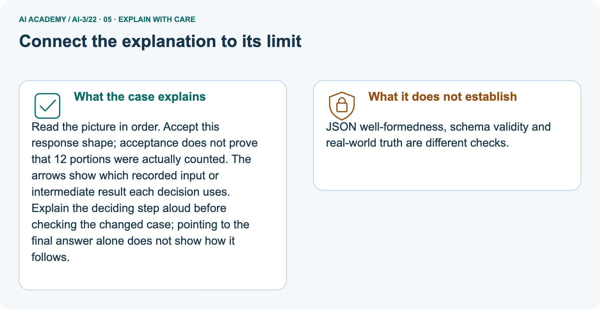
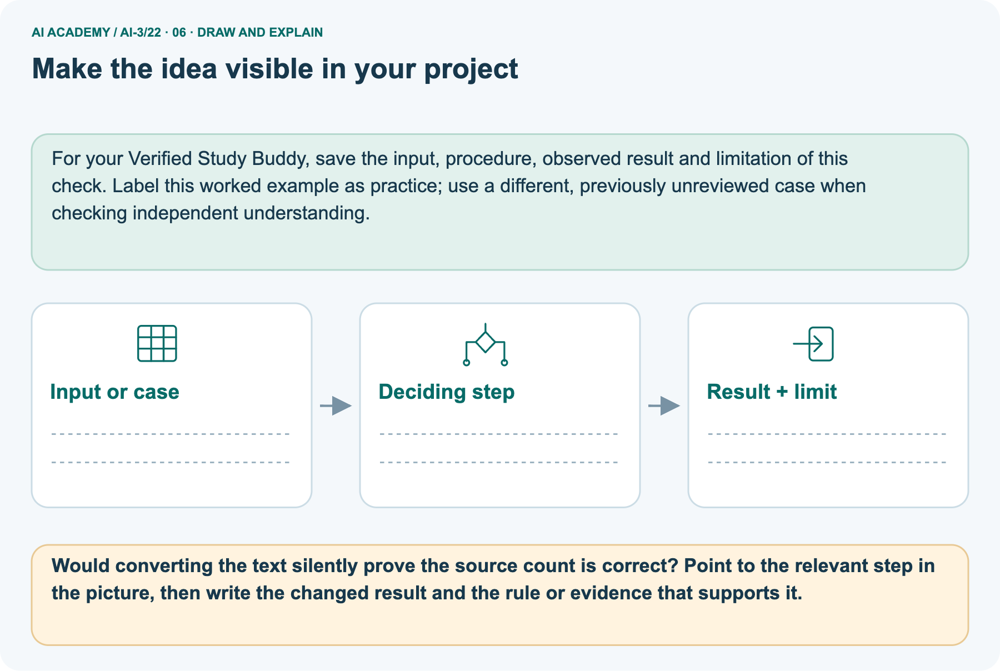

AI Academy · Level 3 · Grade 8 · Week 22 · Teacher guide
Requests Responses and JSON
Learn to understand, design, build, test and explain AI systems responsibly.
Project: Verified Study Buddy
Teacher guide · 1 of 9
Requests, Responses, and JSON
Prepare Requests Responses and JSON: check the target, prerequisites, resources and adaptable teaching schedule.
Teach the learning cycle
Primary target: Parse JSON into Python records
| Session | Sequence and minutes | Resources |
|---|---|---|
| Session 1 · Understand · 45 min | 0–7: recall and prerequisite; 7–15: inspect the concrete case and predict; 15–30: teacher models the worked trace; 30–40: learners explain a step using the text and visual; 40–45: check the core idea. | Sections 1–6; record the brief recall in the workbook. |
| Session 2 · Practise · 45 min | 0–5: retrieve the procedure; 5–15: W2 completion practice; 15–23: explain and check with a partner; 23–30: each learner answers the misconception check; 30–40: targeted reteaching or a harder variation; 40–45: prepare the investigation. | Sections 7–10; use the matching workbook W2 and misconception check. |
| Session 3 · Investigate and transfer · 45 min | 0–5: retrieve the decision rule; 5–20: investigate or trace; 20–30: start the independent case; 30–38: connect the project; 38–43: act on feedback; 43–45: plan the return check. | Use “Run the investigation”, “Connect your project”, “Show what you know”, “Study a complete case” and “Try a new case independently”. Give extra time for the full task set. If this week has a coding lab, use its named section; section numbers can change when extra explanations are included. |
This is a starting allocation of 135 minutes, not a validated duration. Preserve all named topics. Schedule extra time for connected examples, the full investigation, independent cases and project building.
Repeated copies of a case share one recorded attempt; they are not new evidence.
Retrieval answer guidance
Tools and APIs
Without opening the old lesson, explain one key idea from Tools and APIs. Give an example and a mistake that the idea helps you avoid.
Look for: Explain the mechanism and terminology of tools and api contracts
Reference example, not the only acceptable wording: Teacher explanation: Tools expose structured operations with input and output contracts.
Generating a tool call is a proposal; validation and authorisation decide whether it executes. For lookup_room accept exactly room_id as a nonempty string; return found plus capacity or a not-found result. It is read-only.
Reject unknown arguments and do not replace missing values with invented facts.
User Need and AI Contribution
Without opening the old lesson, explain one key idea from User Need and AI Contribution. Give an example and a mistake that the idea helps you avoid.
Look for: Explain the mechanism and terminology of capstone requirements and corpus
Reference example, not the only acceptable wording: Teacher explanation: A grounded-assistant capstone begins with bounded requirements and a versioned permitted corpus.
A baseline can be a manual lookup process using the same evidence. Specify the user question, source authority, access, output/fallback contract and evaluation plan. Freeze corpus IDs and split cases before implementation.
Keep teacher material out of student retrieval.
Verify Numbers and Dates
Without opening the old lesson, explain one key idea from Verify Numbers and Dates. Give an example and a mistake that the idea helps you avoid.
Look for: Explain the mechanism and terminology of claim support and citation evaluation
Reference example, not the only acceptable wording: Teacher explanation: Citation evaluation checks source existence, exact passage support and coverage of answer claims. A real citation can still be irrelevant.
For this classroom rubric count a claim as supported only when its cited passage entails it. Separately count correct citation links. Use the number of factual claims as the support denominator.
Use the student module and workbook section with this exact week title. The worked case, independent question and answers below form one aligned lesson sequence.
What the learner must demonstrate
Request id=7 returns status=200 and {"id":8,"pages":90}. Explain why a successful status is insufficient and specify the handling.
Concept to explain
Week 22: Requests, Responses, and JSON
| Term | Meaning |
|---|---|
| request | A message asking a system to return information or perform an action. |
| response | The information or status returned after a request. |
| JSON object | A collection of named fields and values written using JSON syntax, such as {"pages":80}. |
| status | A reported condition of a request or process, such as success, pending or error. |
Prepare the class
Use the supplied scenario, student illustrations and blank paper. For numeric work, offer counters or a calculator after learners show the setup. Fictional records are supplied; personal data and paid accounts are unnecessary.
Alternative compact allocation
This compact option is not the full-week schedule. Use the main teaching cycle and allow extra sessions for the investigation, independent work and project.
Allow 80 minutes: recall 8; explanation 12; worked demonstration 15; guided practice 20; independent assessment 15; project and reflection 10. Extend the lab into a second session when needed.
Preparation for the connected explanation
Teach Week 26 as a two-session investigation using fictional data. A fictional activity service supplies JSON text. The input contract is a JSON object with name text and minutes an integer from 0 through 60.
The output contract will be a record with accepted and minutes fields. Parsing valid JSON is only the first step. Assess the three stated outcomes through the independent task, not by copying the worked result.
Readiness answer
Reading obtains characters; validation checks whether their meaning and values satisfy rules.
Python 3 editor with a fresh local practice file
Paper trace table and the student workbook
Fictional input records from this lesson; no real student identifiers
End goal for the pictorial case
By the end, I can explain requests responses and json using a traced example and a stated limitation.
This added worked case illustrates the week’s main idea. Retain all original and connected topics; schedule its practice within the teaching cycle.
Teacher guide · 2 of 9
Explain the mechanism
Model Requests Responses and JSON using the supplied case, labelled mechanism and reasoning. Make the scope of each conclusion explicit.
Input → Process → Output
Trace the information. At each stage, ask what changed and how you could test it.
Which stage could fail even when the other two are correct? Explain:
Predict first. Then check each step. A correct answer without visible reasoning is incomplete evidence.
1. Request requires question:text and source_ids:list.
2. Response requires answer:text, citations:list, status:text.
3. Missing citations or wrong source_ids type fails validation.
4. Error response should state code, message, and safe next step.
Recalculate, retrace, or restate the reasoning in your own representation:
CHECK Did the evidence answer the exact question? Did the total, path, or source record stay consistent?
Concrete teaching case
The teaching case
Request is for B7; response is {"id":"B7","pages":120}. Another response has malformed JSON.
What checks precede use?
Exact explanation to model
Why the result follows
Request success, JSON validity, matching id, required fields and numeric type. Handle malformed responses explicitly.
Explain the added worked example
A fictional activity service supplies JSON text. The input contract is a JSON object with name text and minutes an integer from 0 through 60. The output contract will be a record with accepted and minutes fields.
Parsing valid JSON is only the first step.
Explain the added worked example · 1
The output is {"accepted": true, "minutes": 12}. JSON uses lowercase true, false and null; Python uses True, False and None. json.loads converts between representations.
The worked output line assumes the parsed top-level value is a dictionary; a robust interface must reject other top-level types before accessing fields.
Key terms
| Term | Meaning |
|---|---|
| JSON | A text format for structured values |
| Parsing | Converting formatted text into program values |
| Interface | The agreed way one part of a system exchanges data with another |
| Contract | Specified inputs, outputs and error behavior |
Model the reasoning aloud
Use the complete worked example below before asking learners to complete W2. Reveal a small part, invite a prediction, then explain the deciding step.
These teacher notes contain solutions; do not reveal the independent case answer during modelling.
| Thinking move | Teacher prompt |
|---|---|
| Plan | What is given? What is the question? Which procedure fits these facts? |
| Do | Point to each input and intermediate step in the worked trace. Name the rule that allows the next step. |
| Check | Does the output answer the question? Which assumption or limitation prevents a larger claim? |
Use the diagram and verbal explanation together. Ask learners to match a sentence to a specific visual step; do not assign learners fixed visual or auditory learning styles.
A pictorial worked case: Requests Responses and JSON
A lunch-count response must satisfy a declared JSON contract.
The facts we will use
Supplied facts
The toy response has exactly class_code text and portions integer 0..30. Example: {"class_code":"R8","portions": 12}.
Supplied facts
All inputs and outcomes in this worked example are invented classroom data; no real model run is claimed.

Read the picture one step at a time
Why this result follows
Why the result follows
Read the picture in order. Accept this response shape; acceptance does not prove that 12 portions were actually counted. The arrows show which recorded input or intermediate result each decision uses.
Explain the deciding step aloud before checking the changed case; pointing to the final answer alone does not show how it follows.
What this example does not establish
Keep the stated limit
JSON well-formedness, schema validity and real-world truth are different checks.
Change one thing in the pictured case
Change one thing
Change: Replace 12 with the text "12".
Predicted result
Prediction: Reject the response under this strict contract.
Why the result follows
Reason: Digits inside quotes represent text, whereas portions requires an integer.
Ask while showing the picture
Ask while showing the picture · 2
Cover the result. Ask learners to name the inputs and predict the next step. Uncover one step, connect the icon to the actual procedure, and explain its evidence. Then change the supplied condition and compare.
The picture is a representation; it does not document execution of a real AI model.
Teacher guide · 3 of 9
Demonstrate and guide practice
Demonstrate Requests Responses and JSON, reduce support deliberately and check individual reasoning before discussing answers.
Choose the pacing route
Compact alternative: this two-session sequence covers selected core tasks. Use the three-session weekly plan for the full lesson, independent transfer, feedback and project work; allow extra time for extensions.
Board sequence
1. Put the facts on the board
Write the given facts: Request is for B7; response is {"id":"B7","pages":120}. Another response has malformed JSON.
2. State the decision to explain
Write the question to explain: What checks precede use?
3. Reveal the worked reasoning
Reveal after predictions: Request success, JSON validity, matching id, required fields and numeric type. Handle malformed responses explicitly.
Hold back the independent task
Keep for an independent attempt: An API returns {"ok":false,"error":"not_found"}. Your app tries to display response.title. What should it do instead?
Classroom dialogue
Ask the class
Ask: Which facts are given, and which would we have to assume? Learners mark relevant details before discussing answers.
Language to model
Say: Predict first. Show the rule, information path or calculation that would produce the result. A correct guess is not yet an explanation.
Reveal reasoning one step at a time. Explain why a tempting alternative fails. Write units and denominators for arithmetic, trace conditions for decisions, and identify supporting sources for claims.
In pairs, one learner solves while the other checks evidence; exchange roles. Remove the worked answer before independent assessment.
Model these guided questions
Parsing succeeds; validation fails because minutes is text. Exit: No. Syntax, schema validity and observational truth are separate checks.
Case-specific teaching sequence
| Stage | Teacher action |
|---|---|
| Session 1 start to 7 minutes | Retrieve the prerequisite and explain the purpose in the opening section. |
| 7 to 20 minutes | Read the worked example and diagram; ask learners to trace each step aloud. |
| 20 to 33 minutes | Complete W1 and W2, then compare predictions with observed results. |
| 33 to 45 minutes | Collect the guided prediction before running; discuss a mismatch and its cause. |
| Session 2 start to 8 minutes | Retrieve the main rule without showing the previous answer. |
| 8 to 20 minutes | Use W3 to diagnose and repair the stated failure; rerun an earlier case. |
| 20 to 35 minutes | Collect W4 independently, including code or plan, predictions and explanations, before hints. |
| 35 to 45 minutes | Discuss W5 and the exit; use the fresh retry when support was needed. |
Reduce help deliberately
Completion practice
Completion task: Classify {"minutes": "5"} and {minutes: 5} as valid JSON text or malformed JSON.
Reasoning to listen for
Teacher check: The first is valid JSON but its minutes field fails the integer schema. The second is malformed because the key is not double-quoted.
Start by identifying the given inputs together. Leave the intermediate steps blank. If needed, model one step, then withdraw that help on the next step. Move to a full trace only when the partial trace is understood.
For partners, alternate explainer and checker; collect a response from every learner before discussion.
Individual reasoning check
Use the worked case for JSON and interface contracts. Proposed explanation: “A successful run proves the conclusion”. Decide whether this explanation is supported.
Point to the step or supplied fact that decides; explain your repair if needed.
Expected repair
Expected correction: An interface should state what happens for malformed text, wrong structure and invalid values. Do not expose raw private input in error messages. Use only the fictional records supplied for practice.
Collect explanations, not only yes/no votes. If a misunderstanding is common, re-model the relevant step for the class.
If it affects a few learners, give a short targeted group explanation while others solve a more demanding variation.
Pictorial practice question
Would converting the text silently prove the source count is correct? Point to the relevant step in the picture, then write the changed result and the rule or evidence that supports it.
Reasoned teacher answer
No. Under the stated strict contract reject the wrong type. Any explicit conversion policy would change the contract, and factual verification remains separate.
Changed-case check: Reject the response under this strict contract. Digits inside quotes represent text, whereas portions requires an integer.
Changed-case reasoning: Reject the response under this strict contract. Digits inside quotes represent text, whereas portions requires an integer.
Collect each learner’s explanation before discussion. Use the first missing connection between input, deciding step and result to choose support. This question is worked-case practice, not fresh mastery evidence.
Teacher guide · 4 of 9
Run the weekly evidence lab
Run the Requests Responses and JSON investigation and use the first unsupported step to choose a teaching response.
Words You Can Use to Reason
A definition matters when you can recognize the idea, use it, and contrast it with a near-miss.
Predict → Test → Record → Explain
Keep expected and actual results separate. Surprises are useful data when recorded honestly.
Inspect eight objects for syntax, required fields, types, allowed values, and source ownership; repair without inventing data.
What did the hardest test teach you that the normal test did not?
Make the lab runnable
Use the concrete case as the shared normal case and the independent question as a second case. Each pair creates a boundary or missing-information case and predicts its result before testing.
Keep the expected result separate from an observed mistake.
| Record | What to capture |
|---|---|
| Input or evidence | Exact data, instruction or claim |
| Expected result | Answer or safe fallback declared before the run |
| Observed result | Actual result, including errors |
| Explanation | Rule, calculation or evidence explaining the outcome |
| Next test | One justified change and a new prediction |
Diagnose and reteach
For guessing, return to given facts and request a trace. For vocabulary without application, use one example and one non-example. For arithmetic errors, check the setup before the calculation.
Finish with a different uncoached case before recording mastery.
Address these additional misconceptions
A successful run proves the conclusion: An interface should state what happens for malformed text, wrong structure and invalid values. Do not expose raw private input in error messages.
Use only the fictional records supplied for practice.
Matching the example is enough: Require the new W4 case, explicit predictions and an explanation. Fresh retry: label Tray and score integer 0 through 5.
Cases score 0 accepted, score 6 rejected, score null rejected; JSON list rejected before field access.
A convenient shortcut preserves meaning: Single quotes around property names are not valid JSON syntax. Use double quotes in the JSON text.
If the whole parsed value is a list, do not call .get on it: check the top-level type first and report a schema failure.
Match the support to the first error
| What the response shows | Next teaching action |
|---|---|
| Missing or misread facts | Read the case aloud, mark supplied versus unknown facts, and let the learner restate it. |
| Wrong procedure | Return to the deciding step in the worked case. Contrast it with the proposed incorrect explanation. |
| Arithmetic or implementation error | Trace intermediate values or lines; preserve the first mismatch and retry that step. |
| Correct result without a reason | Ask for a trace and a changed case before marking independent understanding. |
| An unsupported wider claim | Ask which supplied evidence supports the claim and which further observation would be needed. |
Offer an oral explanation, drawing, enlarged visual or fewer examples when that removes a reading/writing barrier. Keep the same reasoning goal.
Stretch secure learners by changing a boundary or assumption and asking them to defend the effect, not simply by assigning more of the same questions.
Teacher guide · 5 of 9
Assess and explain the answers
Use the Requests Responses and JSON questions, teacher keys and criteria after the relevant attempts. Previously discussed cases are practice; protect the separately selected independent task.
Worked case answer
Teacher key · Worked case answer
Request success, JSON validity, matching id, required fields and numeric type. Handle malformed responses explicitly.
Independent question
Independent question · withhold the key
An API returns {"ok":false,"error":"not_found"}. Your app tries to display response.title. What should it do instead?
Expected independent answer
Teacher key · Expected independent answer
Check the success or error fields before using result data. Show a useful not-found response and allow correction of the request.
What counts as evidence
| Criterion | 0 points | 1 point | 2 points |
|---|---|---|---|
| Result | Incorrect or absent | Partly correct | Correct with necessary conditions |
| Reasoning | No supporting trace | Some steps | Clear mechanism, calculation or source support |
| Limit | Overclaims certainty | Vague limitation | Relevant uncertainty or missing fact |
| Transfer | Copies without adapting | Adapts with prompts | Solves a changed case independently |
Use 6/8 as a classroom checkpoint, with 2 required for both Result and Reasoning. This is a proposed teaching rule, not a validated certification threshold.
Do not count a coached answer as independent mastery; correct unsafe or unsupported claims regardless of total.
Feedback
Ask the learner to find the evidence that challenges this claim: “Every API response contains successful result fields.” Keep the first attempt and an uncoached retry separate.
Original transfer answer
Teacher key · Original transfer answer
The response is structurally plausible but for the wrong ID. Check status, parseability, required fields, types and matching ID before use.
Reject or report the mismatch; do not silently attach another book's page count to id=7.
Explanations for the additional workbook examples
W1 Translate a value
Workbook question · W1
What Python value does JSON null become? What JSON value represents Python True?
Teacher reasoning · W1
None and true, respectively.
Teacher reasoning · W1
Parsing JSON null produces Python None, while serialising Python True produces JSON true. The spelling belongs to the representation: lowercase true is JSON text, not the Python Boolean name True.
Keep parsing and serialisation directions clear.
W2 Separate failures
Workbook question · W2
Classify {"minutes": "5"} and {minutes: 5} as valid JSON text or malformed JSON.
Teacher reasoning · W2
The first is valid JSON but its minutes field fails the integer schema. The second is malformed because the key is not double-quoted.
W3 Repair the interface
Workbook question · W3
A parser accepts a JSON list then crashes on .get. What check belongs before field access?
Teacher reasoning · W3
Require type(record) is dict and handle failure before any .get or keyed field access.
W4 Specify independently
Workbook question · W4
Define a JSON contract for {"label": "Box", "count": 4}: nonempty text label, integer count 0 through 10. Give a valid case, a wrong-type case and a missing-field case with expected acceptance.
Teacher reasoning · W4
Valid Box/4 accepted; count "4" rejected for type; absent count rejected as missing. State that malformed JSON and non-object top levels are also rejected.
W5 Limit parsing
Workbook question · W5
A JSON record parses successfully. Does that prove its observation is correct?
Teacher reasoning · W5
No. Syntax, schema validity and observational truth are separate checks.
Teacher reasoning · W5
No. Parsing checks JSON syntax. The schema separately checks the expected fields, types and ranges.
Collection evidence is a third question: even a well-formed, schema-valid duration could have been measured or recorded incorrectly.
Assess independent transfer
Independent question · withhold the key
Selected case: Define a JSON contract for {"label": "Box", "count": 4}: nonempty text label, integer count 0 through 10. Give a valid case, a wrong-type case and a missing-field case with expected acceptance.
Selected case answer
Teacher key · Selected case answer
Valid Box/4 accepted; count "4" rejected for type; absent count rejected as missing. State that malformed JSON and non-object top levels are also rejected.
| Dimension | Evidence required |
|---|---|
| Explanation | Names the applicable idea or procedure and ties it to the supplied facts. |
| Trace and result | Preserves the given inputs and shows the relevant intermediate steps; distinguishes a prediction from an observed execution. |
| Limits | States the assumptions, missing evidence or conditions under which the result would change. |
Teacher key · Selected case answer
Record each dimension as not yet, with support, or independent. Accept a valid alternative procedure with a defensible trace.
Do not penalise an honestly recorded model failure if the learner correctly explains its evidence and limits.
Feedback that the learner uses
Name the earliest unsupported step and give one action to repair it. Have the learner make that repair now and explain why. Then assess the relevant skill on a fresh, fully specified case.
Confirm it was not previously practised with feedback; solve and check the new case before assigning it. A follow-up design prompt is a starting brief, not automatically an equivalent test.
Teacher guide · 6 of 9
Connect and extend learning
Connect Requests Responses and JSON to Verified Study Buddy, adapt support and plan a later changed-case check.
Verified Study Buddy
Use a stable request/response contract between interface, retriever, model, and verifier.
Keep the decision, input, result, explanation and remaining limitation in the project evidence record. Retrieve this record next week rather than restarting the project.
Support and stretch
Provide one short approved passage; separate instruction, input, output and evidence. Stretch: introduce an unsupported claim or conflicting source and validate claim by claim with a fallback.
Exit reflection
Ask for one decision the learner can now justify and one situation requiring more evidence or human review. Confidence ratings are separate from correct independent performance.
Bridge to the next week
Next: Week 23: Block-to-Python Bridge. Retrieve today’s evidence and identify what carries forward and what is new.
Support and fresh reassessment
Color JSON punctuation separately from values. Extension: serialize a valid result, parse it again and check the data values are preserved.
Independent W4 evidence: Valid Box/4 accepted; count "4" rejected for type; absent count rejected as missing. State that malformed JSON and non-object top levels are also rejected.
Record whether the learner needed no help, a hint or explanation. Fresh retry: label Tray and score integer 0 through 5. Cases score 0 accepted, score 6 rejected, score null rejected; JSON list rejected before field access.
Next week: Exceptions and recovery. Reuse this week's explicit contracts and evidence.
Plan the delayed return
Suggested return points in this level: ai-3/23, ai-3/25, ai-3/28. Use actual classroom dates, adjusting for holidays and gaps. One, three and six teaching weeks are scheduling choices, not a claimed optimal spacing.
At a delayed check, ask for the idea from memory and a changed application. Compare with the earlier independent response and record support used.
For a new level, revisit the previous capstone before checking the new prerequisites.
| Record | Teacher evidence |
|---|---|
| Learner code and date | |
| Concept and case used; prior exposure | |
| Explanation / trace / limits | |
| Support and first repair | |
| Changed case and delayed outcome | |
| Next teaching action |
Use the evidence to choose reteaching or the next step. A completed page, confidence rating or attractive project does not by itself demonstrate understanding.
Project evidence from this case
For your Verified Study Buddy, save the input, procedure, observed result and limitation of this check.
Label this worked example as practice; use a different, previously unreviewed case when checking independent understanding.
Teacher guide · 7 of 9
Prepare, teach and assess
Use this preparation summary alongside the detailed Requests Responses and JSON lesson; it is a checklist rather than a replacement for the full sequence.
Teaching target
Teaching target: Parse JSON into Python records
Prepare the labelled worked-case picture, the matching workbook, fictional input cards and a place for individual responses. No paid AI account is required for the paper reasoning activities.
| Session | Plan | Resources |
|---|---|---|
| Session 1 · Understand · 45 min | 0–7: recall and prerequisite; 7–15: inspect the concrete case and predict; 15–30: teacher models the worked trace; 30–40: learners explain a step using the text and visual; 40–45: check the core idea. | Sections 1–6; record the brief recall in the workbook. |
| Session 2 · Practise · 45 min | 0–5: retrieve the procedure; 5–15: W2 completion practice; 15–23: explain and check with a partner; 23–30: each learner answers the misconception check; 30–40: targeted reteaching or a harder variation; 40–45: prepare the investigation. | Sections 7–10; use the matching workbook W2 and misconception check. |
| Session 3 · Investigate and transfer · 45 min | 0–5: retrieve the decision rule; 5–20: investigate or trace; 20–30: start the independent case; 30–38: connect the project; 38–43: act on feedback; 43–45: plan the return check. | Use “Run the investigation”, “Connect your project”, “Show what you know”, “Study a complete case” and “Try a new case independently”. Give extra time for the full task set. If this week has a coding lab, use its named section; section numbers can change when extra explanations are included. |
Before class, solve the supported practice: Classify {"minutes": "5"} and {minutes: 5} as valid JSON text or malformed JSON.
Supported practice answer
Reasoned practice answer: The first is valid JSON but its minutes field fails the integer schema. The second is malformed because the key is not double-quoted.
Check every learner before discussion: Use the worked case for JSON and interface contracts. Proposed explanation: “A successful run proves the conclusion”. Decide whether this explanation is supported.
Point to the step or supplied fact that decides; explain your repair if needed.
Repair the misconception
Misconception repair: An interface should state what happens for malformed text, wrong structure and invalid values. Do not expose raw private input in error messages. Use only the fictional records supplied for practice.
Support without giving away the answer
Support: read the exact case aloud, enlarge the labelled picture, supply input cards and model only the first deciding step. Accept a spoken explanation or drawing; retain the reasoning goal.
Extend the reasoning
Extension: Replace 12 with the text "12". Require a prediction and a reason before comparing. Expected result: Reject the response under this strict contract.
Reason: Digits inside quotes represent text, whereas portions requires an integer.
Protect the independent attempt
Independent assessment: withhold the reserved answer until the learner has attempted the new case. Record support separately from correctness.
| Criterion | Not yet | With support | Independent |
|---|---|---|---|
| Explanation | Names an answer without a deciding fact | Uses a hint to link fact and decision | Explains the deciding fact in own words |
| Trace or test | Cannot connect input and result | Completes steps with prompts | Traces or tests a changed case accurately |
| Limits and revision | Claims more than evidence supports | Names a limit after a prompt | States a defensible limit and useful next test |
Project checkpoint
Project checkpoint: Evaluate and revise. Compare with your starting method, explain errors and record a justified revision.
Use the weekly teacher answer for topic-specific reasoning. A saved progress tick is an activity record; judge mastery from the learner’s explanation and evidence.
Teacher guide · 8 of 9
Use feedback, labs and repair paths
Use feedback, earlier review and portfolios purposefully. Apply the coding routine only when this lesson has an executable lab.
Use the two formative questions as supported practice, not as independent mastery scores. Discuss the deciding evidence rather than accepting a guessed selection.
The feedback comes from the reviewed public worked case. Do not reveal the separately reserved independent teacher answer until the learner has attempted that case.
Ask students to predict before running code. Preserve errors and actual outputs; collect a changed test and an explanation. The branch-boundary and indexing lessons deliberately include failure cases.
Use the earlier worked-explanation links to address a specific missing building block, then return to the current question. Adapt this suggestion after observing the learner; it is not an automatic diagnosis.
Collect the completed-work portfolio as evidence. Record support separately from correctness, and assess explanation, trace/test and limitations. Progress ticks and quiz selections alone do not establish mastery.
Teacher guide · 9 of 9
Visual concept journey
Show one Requests Responses and JSON graphic at a time, request a prediction and discuss its trace before the independent assessment.
Use one picture at a time. Hide a worked result before asking for a prediction, then reveal it for feedback. These are supported teaching cases; retain the separate independent assessment for a fresh first attempt.
01. Requests Responses and JSON: the case

A lunch-count response must satisfy a declared JSON contract. Supplied facts: The toy response has exactly class_code text and portions integer 0..30. Example: {"class_code":"R8","portions": 12}.
All inputs and outcomes in this worked example are invented classroom data; no real model run is claimed.
Point to the given fact that matters most. Explain why it matters.
Discuss while showing the picture
Teacher prompt: Point to the given fact that matters most. Explain why it matters. Ask learners to describe one label or arrow in ordinary words. Use the adjacent transcript if the image is difficult to see.
02. Follow the deciding steps

Read fields: class_code is nonempty text; portions is the integer 12. → Check range: 0 <= 12 <= 30, so the declared count is within range. → Accept structure: Accept this response shape; acceptance does not prove that 12 portions were actually counted.
Point to each numbered stage and explain which recorded input it uses.
Discuss while showing the picture
Teacher prompt: Point to each numbered stage and explain which recorded input it uses. Ask learners to describe one label or arrow in ordinary words. Use the adjacent transcript if the image is difficult to see.
03. Follow the evidence

Follow the evidence. Input text | JSON object | Parse with json.loads. Python value | Dictionary fields | Check schema. Output text | accepted and minutes | Serialize with json.dumps
Read the labels and values. Explain the relationship the model shows.
Discuss while showing the picture
Teacher prompt: Read the labels and values. Explain the relationship the model shows. Ask learners to describe one label or arrow in ordinary words. Use the adjacent transcript if the image is difficult to see.
04. Change one thing. Trace what follows.

Original case: Accept this response shape; acceptance does not prove that 12 portions were actually counted. Changed condition: Replace 12 with the text "12". Expected result: Reject the response under this strict contract.
Reason: Digits inside quotes represent text, whereas portions requires an integer.
Predict before checking the worked changed-case result. Name what changed and what the supplied facts allow you to conclude.
Discuss while showing the picture
Teacher prompt: Predict before checking the worked changed-case result. Name what changed and what the supplied facts allow you to conclude. Ask learners to describe one label or arrow in ordinary words.
Use the adjacent transcript if the image is difficult to see. Changed-case reasoning: Digits inside quotes represent text, whereas portions requires an integer.
05. Connect the explanation to its limit

Read the picture in order. Accept this response shape; acceptance does not prove that 12 portions were actually counted. The arrows show which recorded input or intermediate result each decision uses.
Explain the deciding step aloud before checking the changed case; pointing to the final answer alone does not show how it follows. Limit: JSON well-formedness, schema validity and real-world truth are different checks.
Explain the case, then point to a limit on the claim.
Discuss while showing the picture
Teacher prompt: Explain the case, then point to a limit on the claim. Ask learners to describe one label or arrow in ordinary words. Use the adjacent transcript if the image is difficult to see.
Keep the stated scope: JSON well-formedness, schema validity and real-world truth are different checks.
06. Make the idea visible in your project

For your Verified Study Buddy, save the input, procedure, observed result and limitation of this check.
Label this worked example as practice; use a different, previously unreviewed case when checking independent understanding. Draw your input, deciding step, result and limit.
Supported question: Would converting the text silently prove the source count is correct? Point to the relevant step in the picture, then write the changed result and the rule or evidence that supports it.
Draw your project trace and justify the deciding step using evidence.
Discuss while showing the picture
Teacher prompt: Draw your project trace and justify the deciding step using evidence. Ask learners to describe one label or arrow in ordinary words. Use the adjacent transcript if the image is difficult to see.
Supported practice key: No. Under the stated strict contract reject the wrong type. Any explicit conversion policy would change the contract, and factual verification remains separate.
Changed-case check: Reject the response under this strict contract. Digits inside quotes represent text, whereas portions requires an integer.